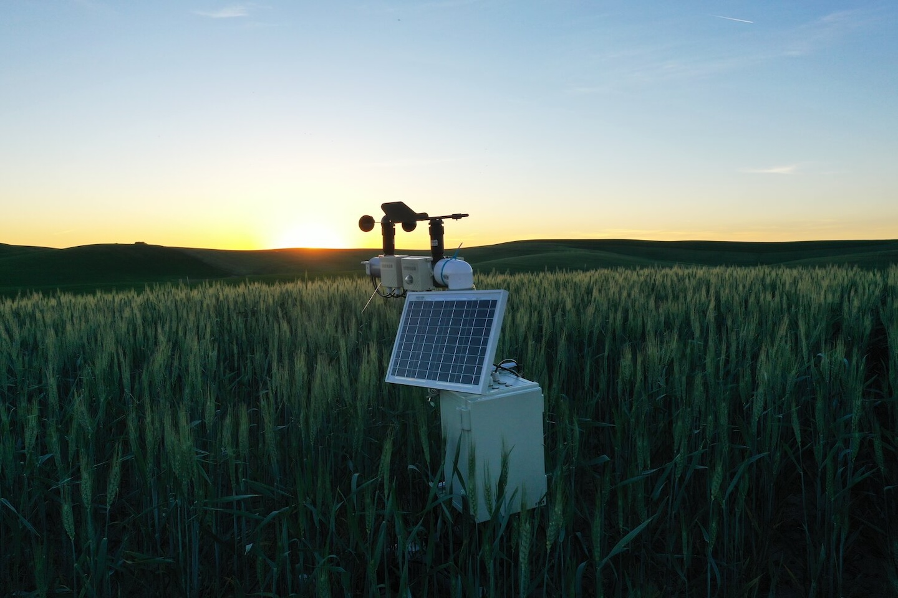
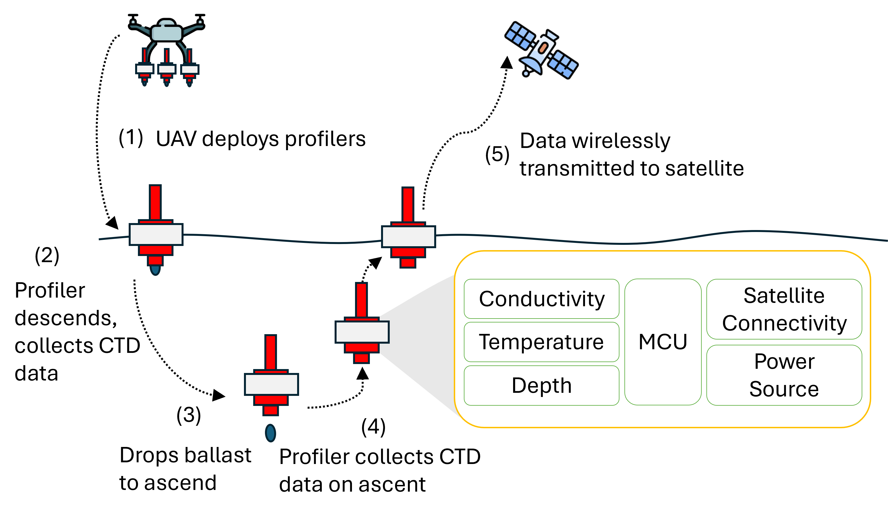
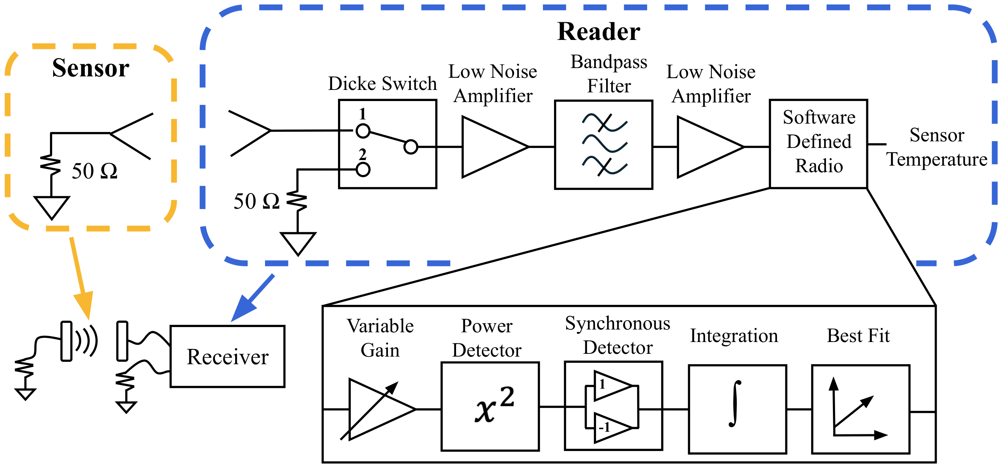
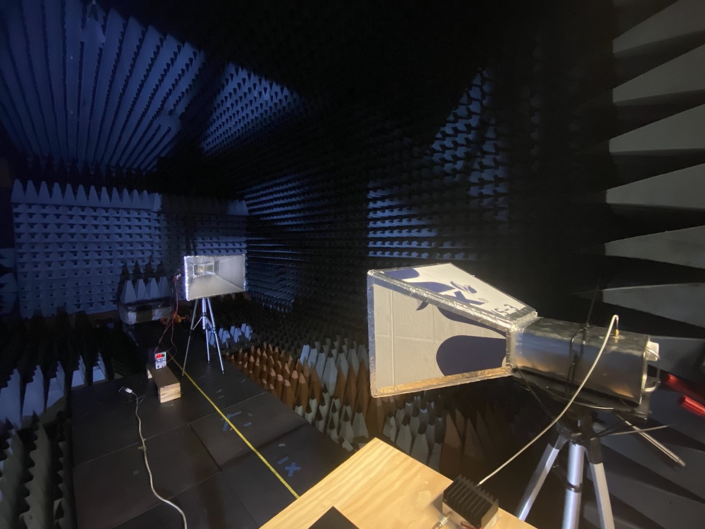
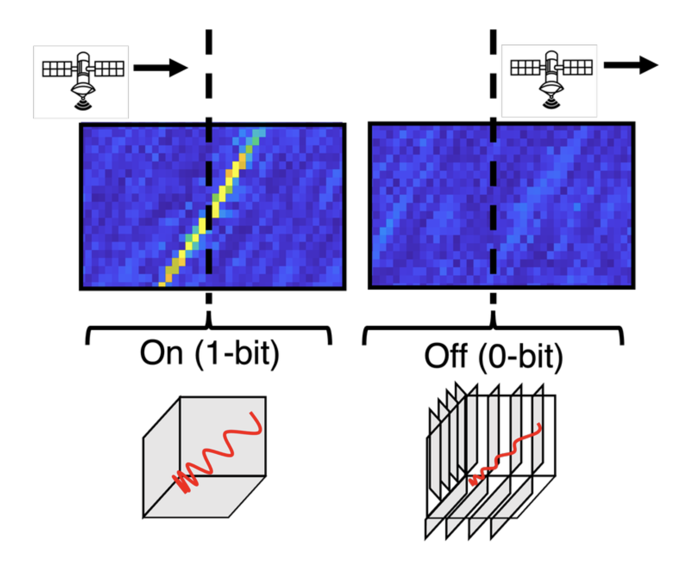
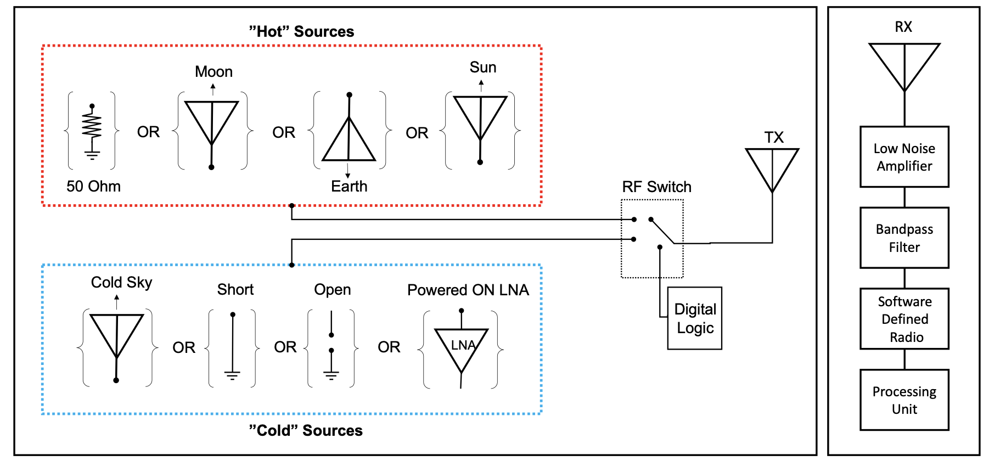
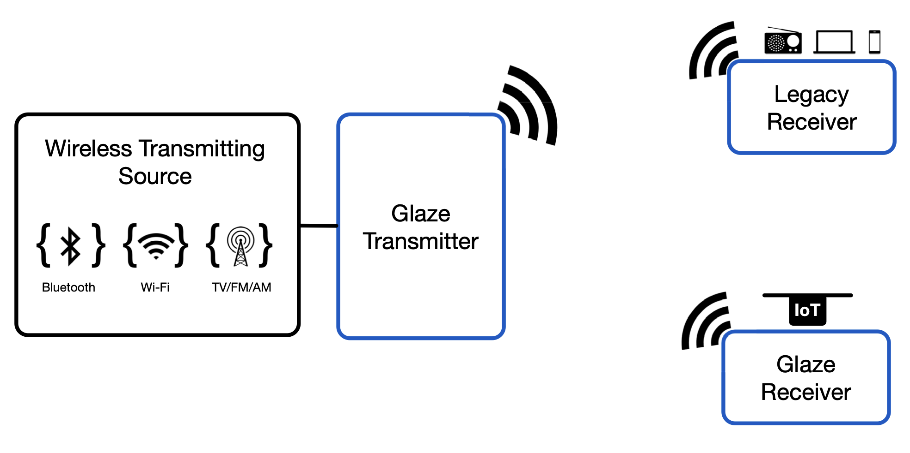
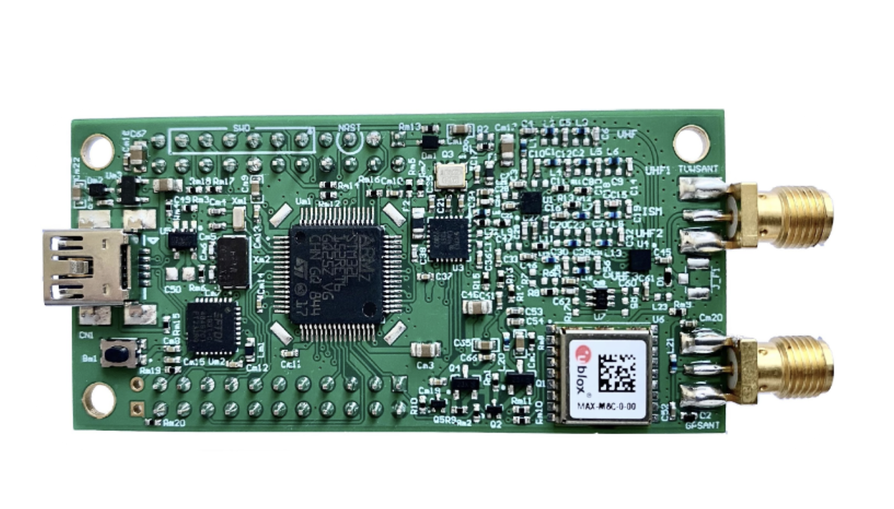

Environmental monitoring has become increasingly relevant due to climate change, however deploying sensor solutions in harsh environments such as oceans, forests, and rural agriculture is challenging. In these scenarios, we need to monitor areas that can span 10s of thousands of acres and lack connectivity and power infrastructure. Developing energy-efficient and cost-effictive sensing and wireless connectivity solutions is needed in order to enable long-term and seamless data collection for applications ranging from data-driven agriculture to ocean profiling and animal ecology. In the S4 lab we focus on solving the aforementioned challenges by developing new types of wireless sensing systems for environmental applications. Our work includes research efforts such as FarmBeats, an end-to-end AI and IoT system for data-driven agriculture, which is now a product of Azure Marketplace. As well as new efforts related to ocean IoT and wildlife monitoring.

End-to-end AI and IoT platform for data-driven agriculture (now on Microsoft Azure Marketplace)

Drone-deployable profiler for low-cost, scalable ocean observation (ACM MobiSys 2026)

Passive temperature sensing using the thermal noise of a resistor (IEEE Journal of Microwaves 2025)
Low-power wireless communication, such as backscatter, has played a critical role in enabling battery-free sensing. Compared to conventional wireless communication methods, backscatter communication is orders of magnitude less power-consuming because the transmitting device (or tag) does not need to generate a carrier signal and instead reflects and absorbs an existing signal in order to modulate information bits. This existing signal can be a generated RF source (e.g., RFID) or an ambient RF source (e.g., TV or FM broadcast signal). A drawback with existing backscatter communication solutions is their dependence on a nearby RF source. In the S4 lab, we are interested in developing new backscatter communication techniques that can be enabled nearly anywhere. These efforts include thermal backscatter, where thermal noise, such as Johnson noise, can be modulted to wirelessly transmit bits of information without the use of a generated or ambient RF source. More recent efforts include satellite backscatter, where we demonstrate that existing satellite infrastructure can be utilized to enable long-range connectivity in remote and resource-constrained areas.

Transmitting data by modulating the thermal noise of a resistor — no RF generation required (PNAS 2022)

Satellite backscatter using Synthetic Aperture Radar for remote sensor connectivity (ACM SenSys 2025)

Using extraterrestrial noise sources for wireless communication (ACM HotNets 2023)

Overlaying IoT transmissions on occupied spectrum (ACM IMWUT 2020)

Long-range IoT in the TV White Space spectrum (USENIX NSDI 2022, ACM GetMobile 2022)
As embedded devices become more capable, enabling real-time perception and decision-making at the edge is becoming increasingly important for applications in sensing, robotics, and environmental surveys. However, traditional machine learning models are too resource-intensive for low-power microcontrollers that operate in the field for months or years on battery power alone. We develop new approaches to energy-efficient computing that enable intelligent behavior on highly resource-constrained platforms. Our work explores lightweight and brain-inspired computing frameworks such as Vector Symbolic Architecture (VSA), which use compact vector representations and simple arithmetic to enable robust learning and inference at the edge. Projects include HyperCam (ACM MobiCom 2025) that performs onboard vision processing to reduce communication cost, and NavHD (IEEE IROS 2025), a micro-robotic navigation system that supports real-time control using ultra-fast, low-power reinforcement learning.
Womens health has been historically underrepresented in medical studies thus leading to a shortage of data that accurately represents women. With the growth of wearable devices, we see an opportunity to expand womens understanding of their personal health as well as develop a stronger base of data for womens health research. In the S4 lab, we are develop energy-efficient and lightweight wearable devices for health monitoring.